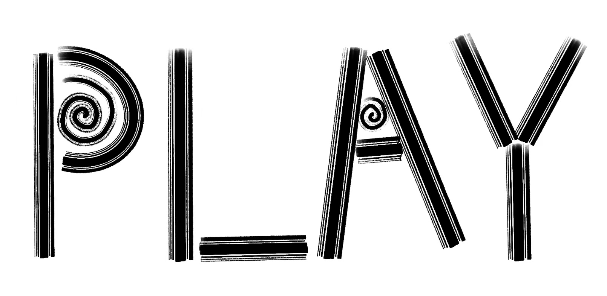

Step1
Since there are many differences between web and print out fonts, for example, on the web fonts are
diverse, changeable, and easy to change, and the medium of both is different, web fonts will be more in
today's digital environment, is a newer form, and has better readability.
In the first group, I hope there will be some playability, so I may use capitalization to highlight the
main characters in this group.

When the mouse touches the swirls in the middle of some letters, those swirls will turn with it.
The second group will be mapped out like a mirror, with different colors changing from moment to moment.
The third group, is also a change of color, but unlike the second group, it will be a change of wave
shape.
The fourth group looks like a glowing effect, but when the mouse touches the font, there will be a
balloon-like bursting effect.
The fifth group will have the same feeling of water ripples when touched, so I chose the same material
as ink painting and the font.